clspBenders module¶
| Filename: | clspBenders.py |
|---|---|
| Author: | marco caserta |
| Date: | 09.03.2017 |
| Last Update: | 20.03.17 |
Copyright (C) 2017 by Marco Caserta (marco dot caserta at ie dot edu)
(This document was generated on 20.03.17 at 11:34.)
This program is free software; you can redistribute it and/or modify it under the terms of the GNU General Public License as published by the Free Software Foundation; either version 2 of the License, or (at your option) any later version.
This program is distributed in the hope that it will be useful, but WITHOUT ANY WARRANTY; without even the implied warranty of MERCHANTABILITY or FITNESS FOR A PARTICULAR PURPOSE. See the GNU General Public License for more details.
You should have received a copy of the GNU General Public License along with this program; if not, write to the Free Software Foundation, Inc., 59 Temple Place - Suite 330, Boston, MA 02111-1307, USA.
Introduction¶
This code implements a simple benders decomposition scheme for the multi-item multi-period capacitated lot sizing problem. Benders cuts are added via LazyConstraintCallback(). The case of an infeasibility cut is not considered, since the subproblem is always feasible (due to the possibility to choose an arbitrarily large value for the initial inventory level.) This should be improved adding a cut based on extreme rays.
The following is a formulation for the MIMPLS:

To address the problem using Benders decomposition, we define a master, which
includes the difficult binary variables  , and a subproblem,
which deals with the continuous variables 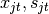.
, and a subproblem,
which deals with the continuous variables 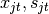.
 .
.Subproblem¶
Given a solution to the master problem 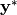, we define a primal subproblem as:
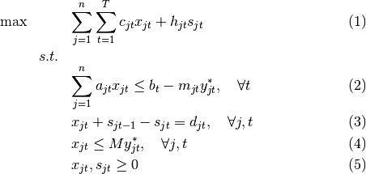
Note that the subproblem is an LP and, therefore, can easily be solved using cplex. Once the subproblem is solved, we obtain the optimal dual values.
Assume we have:
- 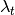: The dual values of the capacity constraints (2)
- 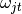: The dual values of the demand constraints (3)
- 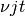: The dual values of the logical constraints (4)
Then, we write the benders cut as follows:
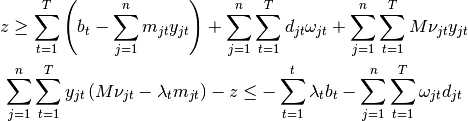
Alternative Formulation Based on the Support Function¶
(Based on Floudas, Non-linear and Mixed-integer Programming, Ch.6)
The general master program is:
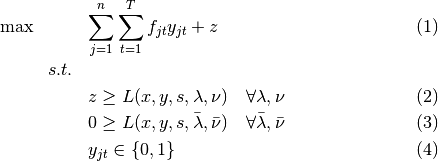
where constraints (2) are optimality cuts, while constraints (3) are
feasibility cuts. In this work, we ignore the feasility cuts, due to the use
of initial inventory variables sI. Now, since the above formulation
requires the definition of all the possible value of  and
and
 , we solve a relaxation of the master problem. Therefore, at
every iteration, the master provides a lower bound of the optimal value.
, we solve a relaxation of the master problem. Therefore, at
every iteration, the master provides a lower bound of the optimal value.
The master contains, as constraints, two inner optimization problems. We express the inner minimization problem in terms of support function, i.e

Using ideas from Geoffrion (1972), we consider the case of linearly separable
functions in  and
and  , i.e., the objective function
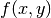 and the constraints 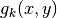 can be separated. In this
case, the optimalit cut is:
, i.e., the objective function
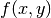 and the constraints 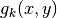 can be separated. In this
case, the optimalit cut is:
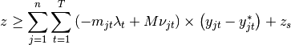
where 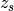 is the optimal objective function value of the last subproblem, and 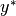 indicates the current optimal solution of the master problem.
Note
The dual values have positive sign here, since they are treated as Lagrangean multipliers (this is the reason why the sign is reversed.)
How to Run This Code¶
See parseCommandLine().
History¶
15.03.17:
The problem seems to be that the lower bound provided by the master is not tight. I attempted to tighten the bound, by adding constraints linking (somehow) the variables
- class clspBenders.BendersLazyConsCallback(env)[source]¶
Bases: cplex.callbacks.LazyConstraintCallback
This is the LazyConstraintCallback of cplex. We implement Benders algorithm via callback. That it, the master is solved within a branch and bound framework and, every time a new master solution is obtained, the callback is used to:
- get the master solution
- pass it to the subproblem to obtain 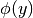
- get the dual values and define Benders cut
- add the cut to the master
- give control back to cplex
- get the master solution
- class clspBenders.Instance(inputfile)[source]¶
Class used to read the instance from a disk file. Instances are obtained from Trigeiro. We also compute a tight value for the big M constant, as well as a cumulative demand value for t to T.
- class clspBenders.MIP(inp)[source]¶
Define the full model and solve it using cplex. We use this class to compute optimal values of the full MIP models and compare them, along with the achieve performance, with the Benders approach.
- class clspBenders.WorkerLP(inp)[source]¶
Define and solve the subproblem. We initilize the subproblem with the right hand side values of the constraints to zero, since we assume the initial values of
to be equal to zero. Next, within the
separate() function, we define the rhs values to the correct values,
depending on the solution obtained from the master.Cplex requires the presolve reductions to be turned off, using:
cpx.parameters.preprocessing.reduce.set(0)
In addition, we need to ensure that the LP is not solved using the interior point method, otherwise dual values won’t be available. We can either use primal simplex or dual simplex.
Note
The subproblem constraints should be defined with a name, in order to be able to recall the precise name of each constraint when we want to obtain the dual values. Briefly, we need to:
define a unique name for each constraint, e.g., capacity.t for each t
store such names in a vector of names, e.g,:
lCapacity = ["capacity." + str(t) for t in xrange(inp.nP)]
get the dual values using:
dCapacity = cpx.solution.get_dual_values(lCapacity)
- separate(inp, ySol, zHat, y_ilo, z_ilo)[source]¶
Here is were Benders cut is obtained and passed to the master.
The following steps describe the algorithm:
- update rhs values of the subproblem, i.e., using the current optimal
solution of the master problem
solve the subproblem
get the dual values 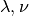
generate cut (lhs and rhs) and store them in a constraint structure
pass the cut to the master
- clspBenders.createMaster(inp, cpx)[source]¶
Create benders master problem. In reality, this is a relaxation of the master, to which we progressively add cuts.
Note
The master problem provides a lower bound to the optimal solution.
Here we try different methods to tighen the lower bound.